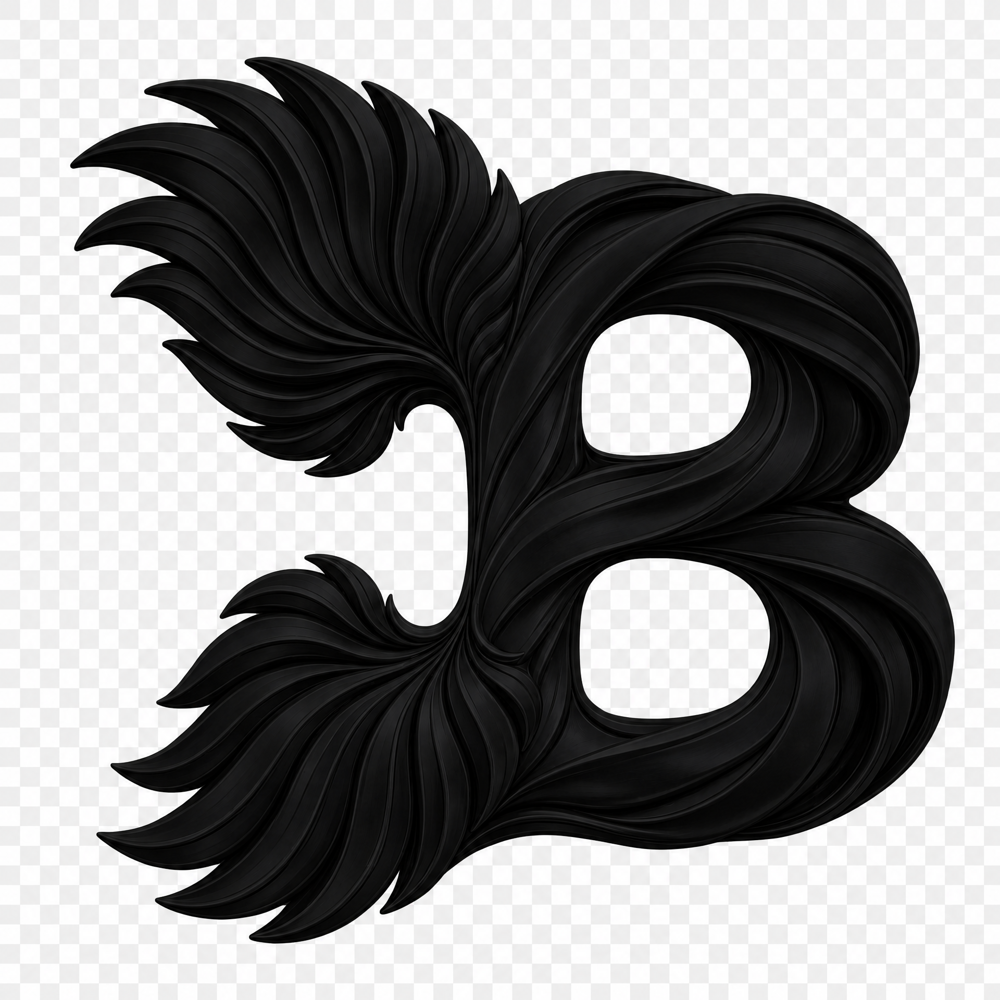
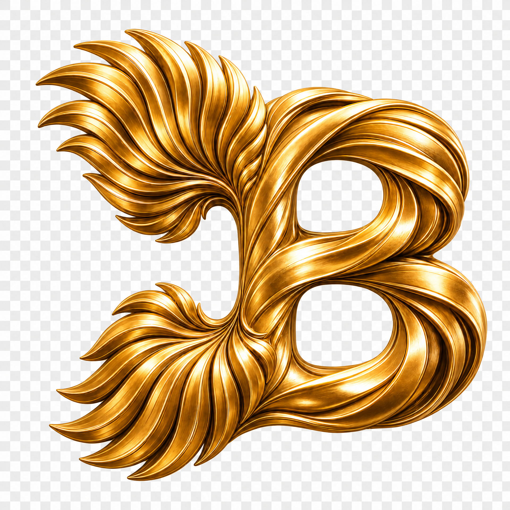

A two-stage identity transition: the black sculptural mark establishes the name, then the gold mark carries the viewer into the image world.

The first photo transition uses the transparent black logo as a strong editorial interruption between the Bonds Mall wordmark and the image.

The second photo transition replaces the black mark with the transparent polished-gold version, carrying the viewer from the editorial text into the photograph.
Both logo files are transparent PNG assets. Use bonds-mall-logo-black.png for the first text-to-photo transition and bonds-mall-logo-gold.png for the second. Replace the demo photo URLs in the two .transition-…::before rules with the intended Bonds Mall photographs when the final photo set is available.